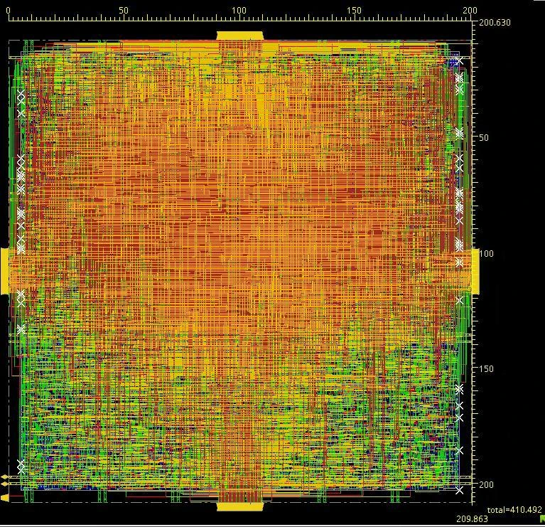

Analog & mixed-signal
Amplifiers, biasing, feedback, and voltage regulation.
ANALOG FIRST. SYSTEMS IN VIEW.
I’m Ruthvik, an electrical engineering graduate student at ASU. My interests center on analog and mixed-signal IC design, with project work spanning transistor-level circuits, RTL, and physical design.
 Where the design begins ↗
Where the design begins ↗

02 / ROUTED LAYOUT ↗Schematics. Simulation. Implementation.
ACADEMIC FOUNDATION
I’m pursuing a master’s in Electrical Engineering at Arizona State University, with a focus on electronic and mixed-signal circuit design. My graduate coursework includes analog and advanced analog IC design, VLSI, digital design for SoCs, and digital verification.
My analog projects explore how transistor sizing, biasing, feedback, and loading shape circuit behavior. I have designed and simulated folded- and telescopic-cascode amplifiers, constant-gm references, and an LDO, using operating-point, AC, and transient analysis to connect design choices with results.
Alongside this, I work through digital implementation and verification: custom CMOS layout, RTL datapaths and control, synthesis, place-and-route, and self-checking testbenches. This builds on my B.Tech. in Electrical and Electronics Engineering at Manipal Institute of Technology.
WHERE I FOCUS
Amplifiers, biasing, feedback, and voltage regulation.
CMOS logic, RTL, synthesis, and layout.
Self-checking testbenches, assertions, and coverage.
SELECTED WORK
Each case study explains the problem, approach, contribution, and what the results actually show. Selected projects include an illustrated brief to download.
Explore the project library →CIRCUITS & SYSTEMS
From transistor-level analog circuits to RTL, verification, and earlier system prototypes. Open a project for the engineering decisions and supporting results.
START HERE
Gain, stability, biasing, and regulation at the transistor level.
From custom CMOS cells to RTL and routed accelerators.
Testbenches, assertions, and independent reference checks.
Earlier embedded, power, and signal-processing projects are included in the full library below.
TAKE THE DETAILS WITH YOU
Every case study includes a three-page PDF with the design approach, contribution, figures, and results.
Try a tool name, another discipline, or a broader topic.
THE FOUNDATION
Experience across silicon validation, embedded hardware, FPGA design, and industrial power systems, alongside graduate studies in integrated circuits.
2023 — 2026
Tempe, Arizona
Validation Intern · DDR5 Silicon Validation / Memory Interface Team
Worked on post-silicon validation and electrical characterization of DDR5 data-buffer devices, connecting bench measurements with Python-based automation and silicon debug.
Hyderabad, India
Embedded Intern
Connected embedded firmware, custom PCB design, and prototype testing for Arduino- and ESP32-based IoT applications.
Hyderabad, India
Student / Project Intern
Developed FPGA-based video-data streaming and transfer logic using AXI4-Stream and AMBA interfaces.
Hyderabad, India
Student Intern
Gained industrial exposure to high-power electrical systems and power electronics through a student internship.
Bengaluru, India
Electrical Design and Analysis Engineer Intern
Worked on an FPGA UART interface with FIFO buffering and finite-state control for digital communication.
ARIZONA STATE UNIVERSITY
Aug 2025 – Aug 2027 (expected) · GPA 3.94/4.00
Analog IC design, advanced analog IC design, VLSI design, digital design for SoCs, and digital verification and testing.
MANIPAL INSTITUTE OF TECHNOLOGY
Oct 2020 – Jul 2024
Coursework included basic electronics, analog and digital system design with labs, and FPGA design.
A concise view of my academic work, design skills, and internship experience.
View resumes ↗EXPERIENCE AT A GLANCE
A focused view of my education, internship experience, and engineering projects. View the PDF in your browser or download a copy.
Want the engineering detail behind the bullets?
Explore the project case studies →START A CONVERSATION
Connect with me about analog and mixed-signal IC design, digital design, or engineering projects.